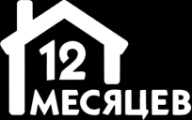

Одна платформа на всю онлайн-торговлю
Продавай больше, управляй с легкостью, расширяй аудиторию с единой платформой для управления электронной коммерцией
Весь цикл
в одном кабинете
Свой сайт, приложение, аналитика, управление рекламой и логистикой, деньги, остатки и отзывы
Твоё приложение
и интернет магазин
за один день
Онлайн-витрины без подрядчиков, с привязкой к Telegram и Max — рабочие, красивые и с твоей наценкой
Стиль магазина уникальный, как ты сам
Выбирай из стильных шаблонов и докручивай, пока не будет идеально подходить под твой вкус
Управляй своим бизнесом на маркетплейсах
Даём аналитику по заказам, остаткам, логистике и помогаем выбрать лучшие карточки товаров
С нами работают самые смелые
-
Нарастили продажи на 40%, потому что смогли выйти из операционки
-
Собрали витрину за выходные и в понедельник уже принимали заказы
-

Свели пять маркетплейсов в один кабинет и перестали терять остатки
-
Запустили второй бренд, не нанимая ни одного разработчика
Продавай по своим правилам
Верни контроль над бизнесом и заставь его работать на твою мечту